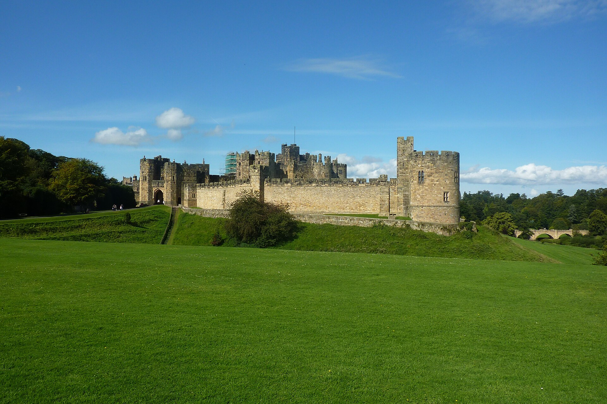
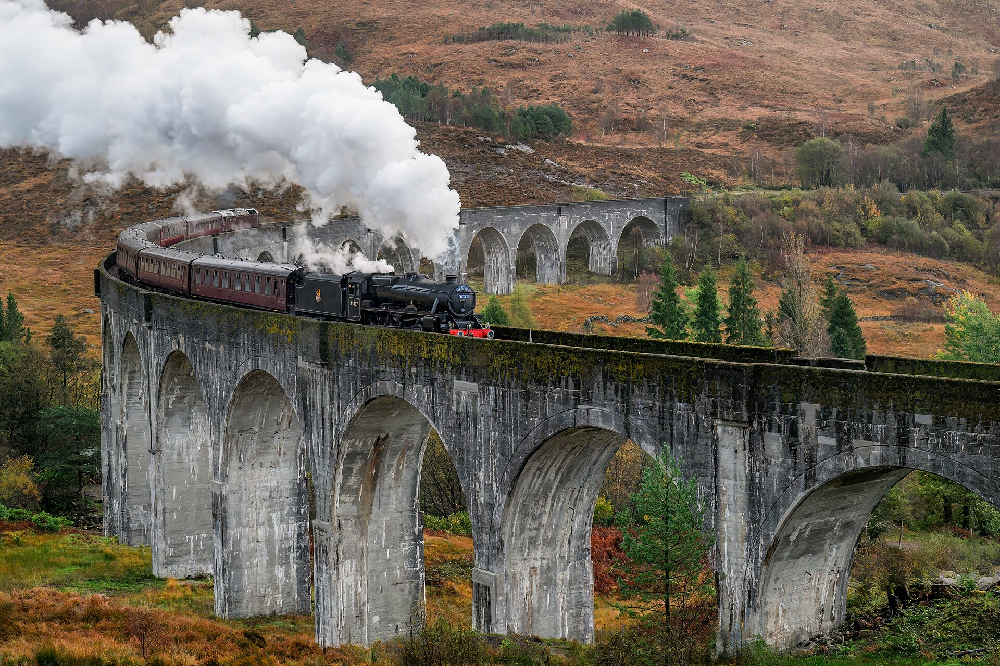
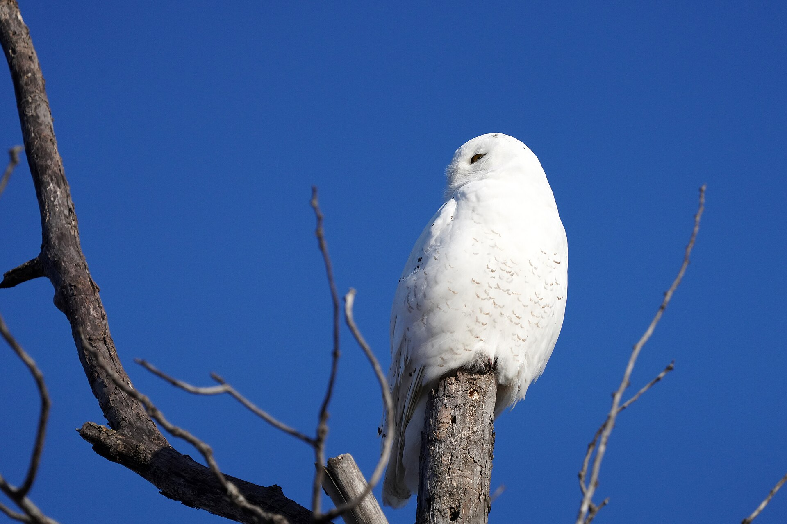
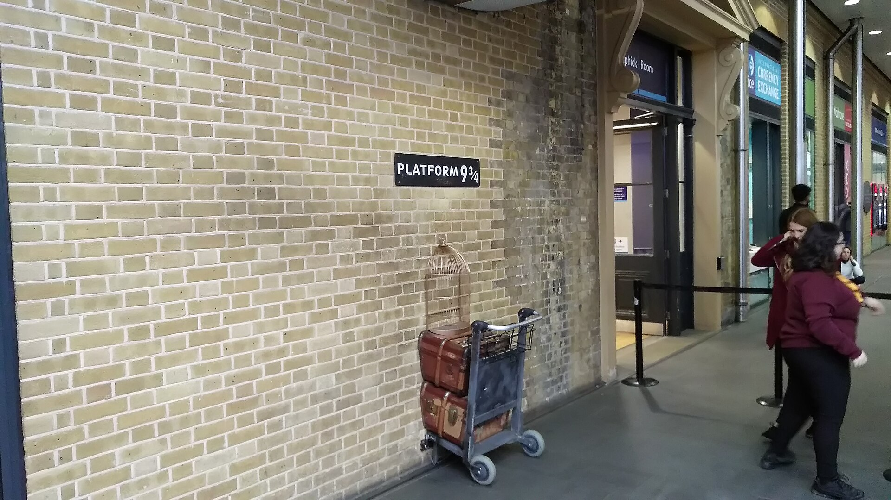

In November 2001, a boy with a lightning-shaped scar flew onto cinema screens in Harry Potter and the Philosopher's Stone. Twenty-five years later, millions of us still love the castle, the owls, the spells, and the friends. This page is a little celebration of all of it.
The Story So Far
- 1997
The very first book
J.K. Rowling's first book, Philosopher's Stone, is published in the UK in June.
- 2001
The first film! ⚡
Harry Potter arrives in cinemas in November. Today we celebrate its 25th birthday.
- 2002
Chamber of Secrets
A flying car, a giant snake and a very brave second year.
- 2004
Prisoner of Azkaban
Time-turners, a hippogriff and a rather scruffy dog.
- 2005
Goblet of Fire
The Triwizard Tournament comes to Hogwarts.
- 2007
Order of the Phoenix
Dumbledore's Army learns to defend itself.
- 2009
Half-Blood Prince
Potions, secrets and a very lucky bottle of Felix Felicis.
- 2010 – 11
Deathly Hallows, Parts 1 & 2
The adventure comes to a grand finish.
Magical Places You Can Really Visit
Some of the magic in the films was filmed at real places. These photos are real, too!

Alnwick Castle
This castle in Northumberland stood in for Hogwarts. Harry's first broomstick lesson was filmed here!

Glenfinnan Viaduct
The Hogwarts Express chugs over this curvy bridge in Scotland. Look at that steam!

Snowy Owl
Hedwig, Harry's loyal owl, was played by real snowy owls. Hoot hoot!

Platform 9¾, King's Cross Station
Muggles just see a brick wall. Harry, Ron and Hermione know better. (The real station has a famous sign and a trolley so everybody can have a photo!)
Which House Are You?
Tap a house to learn about it, or ask the hat to choose for you.
Did You Know?
- 🎬 The first film was directed by Chris Columbus.
- 🎵 The famous music, “Hedwig's Theme”, was composed by John Williams for the first film.
- 🚂 The Hogwarts Express in the films was a real steam engine called Olton Hall.
- 🧒 Daniel, Rupert and Emma were only about ten or eleven years old when they were chosen to play Harry, Ron and Hermione.
- 🧱 The film's King's Cross platform scenes were actually shot at platforms 4 and 5, because they looked more magical.